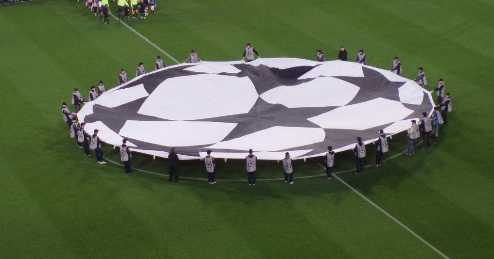
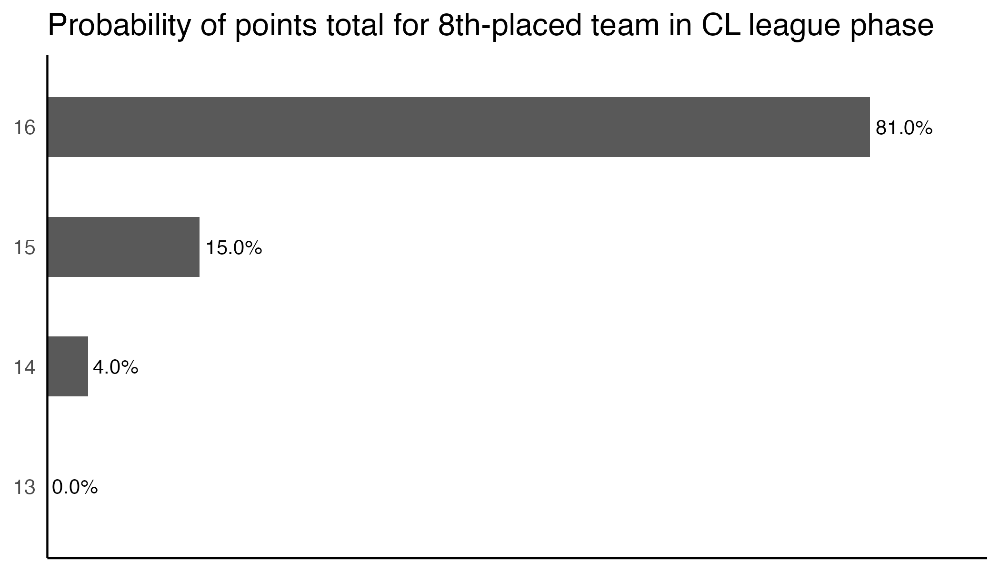

| Champions League 2025-2026 | ||||||
| Standings and qualification probabilities after 7 games | ||||||
| Position | Team | Points | Goal diff | Top 8 | Top 24 | Playoff |
|---|---|---|---|---|---|---|
| 1 | Arsenal | 21 | 18 | 100.0% | 100.0% | 0.0% |
| 2 | Bayern München | 18 | 13 | 100.0% | 100.0% | 0.0% |
| 3 | Real Madrid | 15 | 11 | 86.6% | 100.0% | 13.4% |
| 4 | Liverpool | 15 | 6 | 95.8% | 100.0% | 4.2% |
| 5 | Tottenham Hotspur | 14 | 8 | 56.9% | 100.0% | 43.1% |
| 6 | Paris Saint-Germain | 13 | 10 | 68.9% | 100.0% | 31.1% |
| 7 | Newcastle United | 13 | 10 | 14.7% | 100.0% | 85.3% |
| 8 | Chelsea | 13 | 6 | 35.0% | 100.0% | 65.0% |
| 9 | Barcelona | 13 | 5 | 85.6% | 100.0% | 14.4% |
| 10 | Sporting CP | 13 | 5 | 19.4% | 100.0% | 80.6% |
| 11 | Manchester City | 13 | 4 | 65.8% | 100.0% | 34.2% |
| 12 | Atletico Madrid | 13 | 3 | 51.1% | 100.0% | 48.9% |
| 13 | Atalanta | 13 | 1 | 12.0% | 100.0% | 88.0% |
| 14 | Inter | 12 | 6 | 4.6% | 100.0% | 95.4% |
| 15 | Juventus | 12 | 4 | 3.1% | 100.0% | 96.9% |
| 16 | Borussia Dortmund | 11 | 4 | 0.5% | 100.0% | 99.5% |
| 17 | Galatasaray | 10 | 0 | 0.0% | 99.9% | 99.9% |
| 18 | Qarabag FK | 10 | −2 | 0.0% | 99.6% | 99.6% |
| 19 | Marseille | 9 | 0 | 0.0% | 95.2% | 95.2% |
| 20 | Bayer Leverkusen | 9 | −4 | 0.0% | 96.0% | 96.0% |
| 21 | Monaco | 9 | −6 | 0.0% | 75.6% | 75.6% |
| 22 | PSV Eindhoven | 8 | 1 | 0.0% | 44.3% | 44.3% |
| 23 | Athletic Club | 8 | −4 | 0.0% | 68.5% | 68.5% |
| 24 | Olympiacos | 8 | −5 | 0.0% | 58.4% | 58.4% |
| 25 | Napoli | 8 | −5 | 0.0% | 50.7% | 50.7% |
| 26 | FC København | 8 | −6 | 0.0% | 6.4% | 6.4% |
| 27 | Club Brugge | 7 | −5 | 0.0% | 36.0% | 36.0% |
| 28 | Bodø/Glimt | 6 | −2 | 0.0% | 8.9% | 8.9% |
| 29 | Benfica | 6 | −4 | 0.0% | 16.9% | 16.9% |
| 30 | Pafos FC | 6 | −6 | 0.0% | 24.8% | 24.8% |
| 31 | Union St.Gilloise | 6 | −10 | 0.0% | 8.0% | 8.0% |
| 32 | Ajax | 6 | −12 | 0.0% | 10.7% | 10.7% |
| 33 | Eintracht Frankfurt | 4 | −9 | 0.0% | 0.0% | 0.0% |
| 34 | Slavia Prague | 3 | −11 | 0.0% | 0.0% | 0.0% |
| 35 | Villarreal | 1 | −10 | 0.0% | 0.0% | 0.0% |
| 36 | Kairat Almaty | 1 | −14 | 0.0% | 0.0% | 0.0% |
What are the probabilities of each team qualifying for the next phase of the Champions League?
football
statistics
Champions League
Using bookmaker odds and simulation to find the probability of each team qualifying, and their potential opponents in the next round.

The new Champions League format is in its second season. I’d say the verdict so far is: not perfect, but better than the old format. I’ll talk a bit more about the pros and cons of the new format later, but first let’s try and pick apart the incredibly bunched league table with one game remaining, including a ridiculous eight teams tied on 13 points.
I simulated the final set of matches using Pinnacle’s current lines for each match. Simulation can be tricky to use appropriately and is perhaps overused at times in football analysis, but in this case it is fairly simple: there is only one game left, and the changes in team ratings after this game or further down the line are irrelevant. There is a small case to be made that the games are not independent - a team might play differently near the end based on other scores - but we will have to ignore that unless someone wants to build a ridiculously complex minute-by-minute state model just for some incremental gains.
So here we go. Based on the current match odds, here are the probabilities for each team to finish in the top 8 or the top 24.
At this stage, only Arsenal and Bayern are assured of a bye into the last 16. The next 14 teams are competing for six more places in the top eight, while at the bottom end only four teams are completely eliminated. It’s up for grabs!
Focusing on the English teams, Arsenal, as mentioned, have secured a bye and are assured of home advantage in all second legs by virtue of a top-2 finish. Liverpool have a 95.8% chance of making the top eight, largely thanks to a friendly last fixture at home to Qarabag.
Tottenham have somehow found themselves in 5th place, having won all four home CL games in a campaign in which they only have two home wins from 11 league matches. Is this a reflection of the Premier League’s current level of dominance? Or maybe a different mental switch Spurs are able to turn on in Europe? Either way, with a trip to already-eliminated Eintracht Frankfurt in the final game, Spurs are given a 56.9% chance of making the top eight.
Despite currently occupying 7th position, Newcastle are only rated a 14.7% chance to secure a bye because they face PSG away in their last game, almost certainly needing a win. Chelsea likewise are currently in the top eight and yet more likely expected to finish lower: their probability of a top eight finish is down at 35% as they face a tricky trip to Antonio Conte’s Napoli next week.
Rounding out the English teams we have Manchester City who, despite being in 11th place and the lowest of the six English sides, finished in the top eight in 65.8% of simulations! City are strong favourites for their final game at home to Galatasaray, and are helped by the teams above them either having difficult fixtures or playing against each other. It seems like some of the bookies are dangling 1.8 for City to finish in the top eight which is pretty good value in my opinion, for people who are into that sort of thing.
For Liverpool, Tottenham, and Newcastle thanks to their goal difference, the brief is simple: win and you’re in. But what if they don’t win? What are their chances? And what about Chelsea and City? The following table shows the probability of each team reaching the top eight conditional upon their result in the final match.
| Champions League 2025-2026 Top 8 Finish Probability | |||
| Conditional on result in final game | |||
| Team | Win | Draw | Loss |
|---|---|---|---|
| Tottenham Hotspur | 100.0% | 20.5% | 4.1% |
| Newcastle United | 100.0% | 2.2% | 0.0% |
| Liverpool | 100.0% | 77.6% | 15.6% |
| Chelsea | 89.3% | 1.0% | 0.0% |
| Manchester City | 80.3% | 0.4% | 0.0% |
Newcastle probably have the simplest agenda: they need to win in Paris (good luck with that) otherwise they have about a one in 50 chance of making the top eight. Spurs probably need a win, but 20.5% of the time after a draw in Frankfurt they still scrape home. Liverpool, if they somehow can’t beat Qarabag at Anfield, still have the cushion of a draw being enough 77.6% of the time.
For Chelsea, a win gives them a 89.3% chance, but that will be a tall order in Naples. Finally, Man City are only 80.3% likely to be in the top eight after a win, but given that they are 1/4 pokes against Galatasaray, that still makes them closer to 1.5 than the bookies’ 1.8 (just saying!).
Something else I was able to monitor was the median 8th-placed team from all the simulations: this ended up as 16 points and a +6 goal difference; incredibly close to last year’s league phase when Aston Villa finished in 8th place on 16 points with a +7 goal difference!
In more than 80% of simulations 16 points were required for 8th spot. There is a small-but-not-zero chance that 13 points could be enough, but that would take an absurd set of results.

In addition, I looked at the percentage of simulations where it came down to goal difference - in other words, where the teams in 8th and 9th were on the same number of points. The answer? 67%. So it’s definitely going to be squeaky bum time for a few teams next Wednesday.
Potential playoff opponents
The final set of probabilities I thought might be interesting is to see which opponents the English teams are likely to draw in the playoff round, if they do miss out on the top eight. The draw will be seeded such that the pair in 9th & 10th will play either of the pair in 23rd & 24th, while 11th & 12th will play either of 21st & 22nd, and so on.
Arsenal are through, and Liverpool really should be through, so first we will look at Tottenham’s potential opponents.
| Potential playoff opponents for Tottenham Hotspur | |
| Conditional on being in the playoff round | |
| Opponent | % |
|---|---|
| Qarabag FK | 16.3 |
| Galatasaray | 10.8 |
| Monaco | 9.9 |
| Marseille | 9.5 |
| Olympiacos | 6.7 |
| Athletic Club | 6.6 |
| Pafos FC | 6.3 |
| Bayer Leverkusen | 6.1 |
| Napoli | 6.0 |
| PSV Eindhoven | 6.0 |
| Benfica | 4.4 |
| Club Brugge | 3.4 |
| Ajax | 2.5 |
| Bodø/Glimt | 2.3 |
| Union St.Gilloise | 2.2 |
| FC København | 0.8 |
| Borussia Dortmund | 0.1 |
The good news for Spurs fans is it’s not the scariest set of teams. Qarabag are the most likely - their approximate league phase position is one of the most predictable, since they are assured of qualification but are likely to lose at Anfield in the final game. It is debatable whether Spurs would be underdogs against any of those teams, and would be solid favourites against many of them.
| Potential playoff opponents for Chelsea | |
| Conditional on being in the playoff round | |
| Opponent | % |
|---|---|
| Napoli | 17.1 |
| Qarabag FK | 12.8 |
| Galatasaray | 12.7 |
| Athletic Club | 8.7 |
| Olympiacos | 8.3 |
| Marseille | 8.3 |
| Bayer Leverkusen | 6.5 |
| Monaco | 5.3 |
| Club Brugge | 5.1 |
| PSV Eindhoven | 5.1 |
| Borussia Dortmund | 2.8 |
| Pafos FC | 2.4 |
| Benfica | 1.6 |
| Bodø/Glimt | 1.2 |
| Ajax | 0.8 |
| Union St.Gilloise | 0.6 |
| FC København | 0.6 |
| Inter | 0.1 |
The set of potential opponents for the other English teams is going to be largely similar. Due to the vaguaries of the standings, which are hard to explain without going into the permutations in way too much detail, Chelsea apparently have a 17.1% chance of playing Napoli, if they end up in the playoffs.
Meanwhile, Newcastle are most likely to be in a playoff against Galatasaray or Qarabag. Rack up those air miles!
| Potential playoff opponents for Newcastle United | |
| Conditional on being in the playoff round | |
| Opponent | % |
|---|---|
| Galatasaray | 20.6 |
| Qarabag FK | 18.0 |
| Olympiacos | 8.8 |
| Club Brugge | 8.7 |
| Marseille | 8.0 |
| Athletic Club | 7.2 |
| Bayer Leverkusen | 6.5 |
| Napoli | 6.3 |
| Monaco | 5.4 |
| PSV Eindhoven | 3.5 |
| Borussia Dortmund | 2.6 |
| Bodø/Glimt | 1.2 |
| Pafos FC | 0.9 |
| Benfica | 0.9 |
| FC København | 0.7 |
| Union St.Gilloise | 0.3 |
| Ajax | 0.2 |
| Inter | 0.1 |
| Juventus | 0.0 |
Thoughts on the format
As for my views on the format. First and foremost, let’s be honest, this is a continuation of the descent into low-jeopardy slop that is plaguing many sports nowadays. Perhaps the worst example is basketball’s NBA where they play an 82-game regular season after which 16 of 30 teams still get into the playoffs, and even then they play a best-of-seven series for each round. The Americans truly know how to squeeze all the juice out of the orange.
Undoubtedly a downside of the new Champions League format is that an early defeat or two is not terminal. 24 out of 36 teams going through is pretty outrageous, to be honest, after making everyone play eight midweek matches alongside their domestic campaigns.
One thing I do like is the extra variety of opponents. While the four-team groups in theory created some more tension by playing the same teams home & away, the rivalries just aren’t the same when you are playing teams from another country. The fixture list is far more interesting with eight distinct opponents instead of three.
A problem we do seem to have at the moment is because of the rule where teams from the same country cannot face each other in the league phase, English teams are getting a double advantage: they are already the strongest teams because of their large revenue, and then they get easier fixtures because they don’t have to play one another!
But why should this be the case? Does anyone actually question this rule? Similar to the World Cup wanting to mix continents, I suppose they want to promote mixing between different nations, and it would definitely be a bit silly in the old format if you had three English teams in the same group.
But in the new format? Would it really be so bad if Arsenal had two of their league phase matches against, say, Spurs and Liverpool? Those would be pretty epic games! I just don’t really see the downside.
Another thing I was pondering is the aspect of the new format for the knockout round where the top two teams from the league phase are guaranteed home advantage in second legs all the way to the final. But because UEFA effectively set up a “bracket”, this means if one of those teams gets knocked out, their opponent secures that home advantage. A fair reward, one might say, until you realise that the team finishing 3rd cannot possible get home advantage for the semi-finals, whereas a team who finished much further down the table can.
In the World Cup a pre-determined bracket makes sense, because they are trying to squeeze the whole tournament into one month and have to control the order of games in each round. But in the Champions League there is no reason why they can’t have a random draw each round as they used to do - it was an exciting aspect of the tournament! At the very least they could do a reseeding each round to continue rewarding the team that finished highest.
Overall though, like most competitions, it’s just good to get past the early grind and into the meat of the tournament. And there is no separation of teams from the same country after the league phase, so with perhaps five or six English teams going into the round of 16, we should have some cracking ties to look forward to.
© 2026 John Knight. All rights reserved.